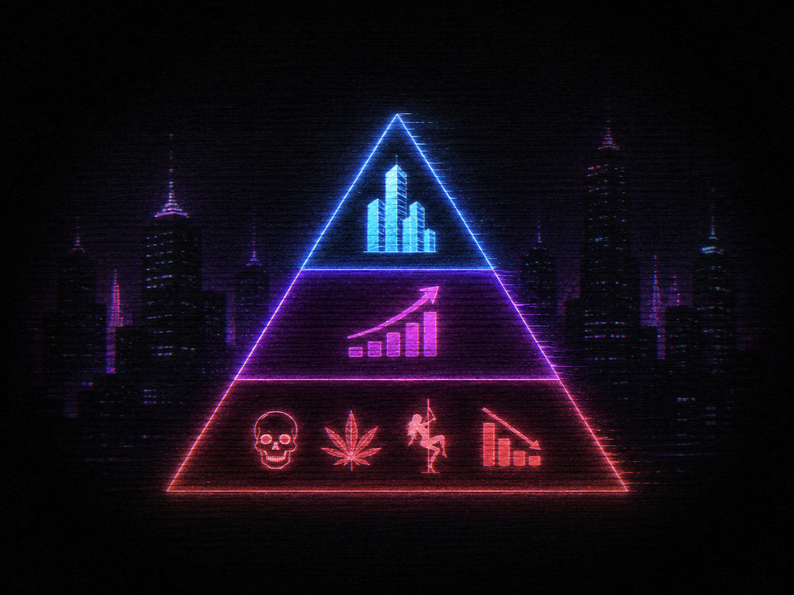
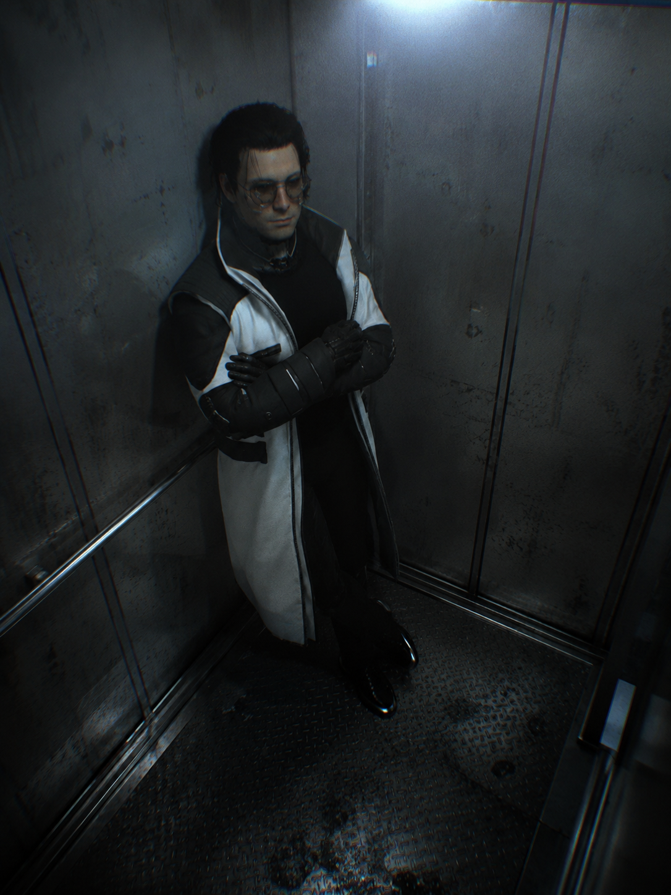
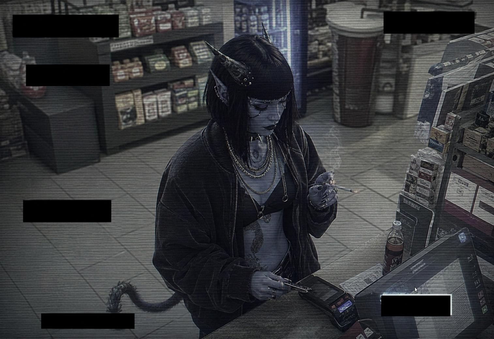
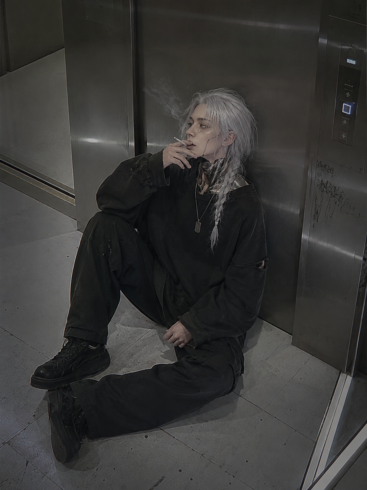
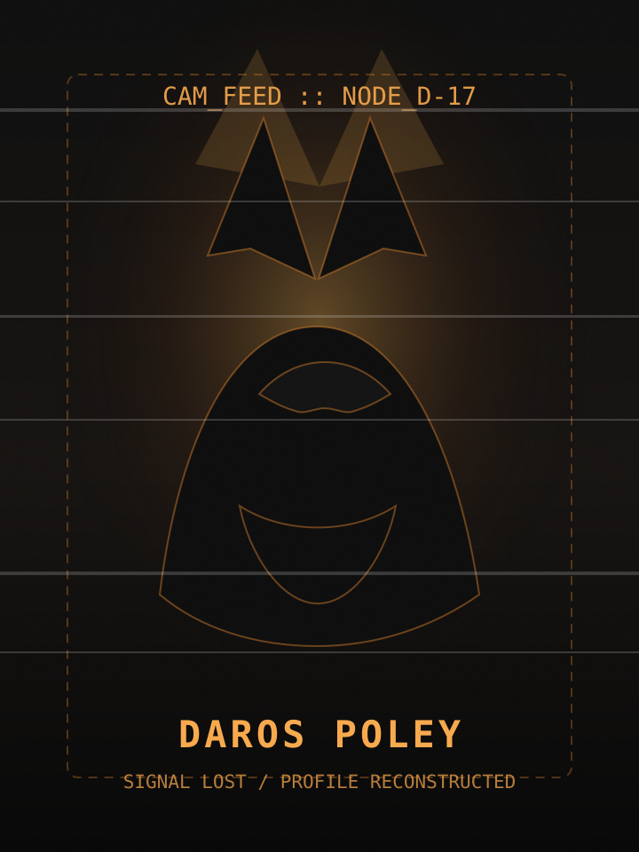

ДОСЬЕ
база данных • полиция y-27
Детективное частное агентство «DECRYPT» так же, как и большинство нишевых организаций, зародилось в секторе Спинвардская Периферия, в самой гуще развития мегаполиса на планете Y-27. Первый основатель организации — Хиоши Сузуки, прибывший на планету около трёх лет назад на небольшом межтрансовом шаттле из Солнечной системы.
Начальный капитал организации составил 400.000$ наличными, что были выделены Хиоши его родителями под залог, с ожиданием того, что тот вернёт более 70% залога свыше — если не прогорит в сточной канаве планеты.
Изначально агентство занималось конкретной поставленной задачей, принимая каждое предложение об детективной деятельности. В них часто входили уже клишированные запросы: слежка за второй половинкой, которая подозревалась в измене, локальные потери вещей и небольших грабежей, по типу скрытия чьей-то квартиры или съёмного жилья, снятие отпечатков, и поиски пропавших посылок, утерянных местной почтовой службой.
Этот нишевый бизнес буквально держался лишь на бытовых запросах, ежедневно пытаясь выйти хоть на пару сотен долларов из долгов. За около более чем годовой работы таким темпом бизнес был приведён в ужасное состояние. Помещение, которое снимал Хиоши, буквально трещало по швам, пока арендодатель в очередной раз завышал цены, аргументируя это очень просто: «Город растёт — а мы теперь в центре его. Нет денег. Вали на окраину».
Это могло продолжаться буквально не более чем ещё два месяца, пока бы у Хиоши не кончились деньги, с учётом того, что его родительский долг съедал более 80% заработка. Но тут как гром с небес появился шанс для малого бизнеса. Либо до Хиоши самого дошла эта мысль, либо ему дал очередную идею ежедневный клиент.
А именно — искать выгоду в корпоративных играх, пытаться заработать на добыче компромата против врага той или иной фирмы, обратившейся к нему, зачистки лишних данных или следов, оставленных в ходе очередного «несчастного случая».
А учитывая, что к этому времени город давно поделил сектриальный треугольник бизнесов, где самую вершину города занимали мега-корпорации, середину — рынки, получившие огласку в обществе, а дно — подпольные рынки, нарко-базы и стрип-клубы с провальными бизнесами. Работа была частно пыльной, и требующей помарать руки.

Хиоши решил сразу же занять данный рынок, и перейти в политику нейтральных действий, усвоив одно простое правило: «За каждым хищником следует свой охотник, и третий наблюдатель, что будет пожинать кости обоих». Название агентства как его основную направленность тот решил не менять в угоду некой конспирации от любопытных глаз правительства. Мол, кому есть дело до очередного детектива-самоучки, который рано или поздно найдёт свою пулю в засанной подворотне.
Данные решения позволили Хиоши с его бизнесом довольно резко начать своё развитие ввысь по этажам города. И буквально за полгода такой работы тот уже смог высунуть голову из канализации в средний сектор, ощутив менее черствый воздух, пропитанный наркотой и героином.
Первое задание их оказалось до ужаса просто. Они получили его от фирмы по продаже средств по уходу за красотой, на другую такую же фирму. Требовалось лишь сделать фотографии босса фирмы, находящегося в приватном клубе со страпоном не в том месте. И в отличие от нижнего рынка, на среднем рынке это могло реально повлиять на восприятие фирмы вплоть до обвала её акций. Дело тот закрыл быстро и без проблем, что пробило ему сразу небольшие, но значительные связи на среднем плато.




К тому моменту тот уже начал предпринимать движение в найме дополнительных сотрудников. Уверенности, естественно, в каждом новом не было, и Хиоши понимал, что каждый из них может подставить его в любой момент. Но это всяко лучше, когда предатель прикрывает спину от врага, чем враг, смотрящий сквозь дырку в твоём сердце.
Первый состав команды был из трёх существ разных рас: аркана-девушка, ярко-розового окраса — Каденс Слоан, мужчина человеческой расы — Иридий с серебряными волосами, и мужчина вульпканин — Дарос Полей.
И если вульпу с арканой Хиоши смог достать буквально с подворотен нижнего плато, человека ему подослал один из знакомых, чьи заказы он уже не раз выполнял со среднего плато. И найм новых сотрудников стал для организации буквально вторым дыханием. Это позволило брать на пару заказов больше, а учитывая, что с приходом Иридия, у них ещё и появился автотранспорт, который по явному согласию всех сторон стал принадлежать организации. С того момента их влияние начало расходиться по среднему плато, начиная с ежедневных заданий по сборке компромата, заканчивая уже прямым созданием самого этого компромата.